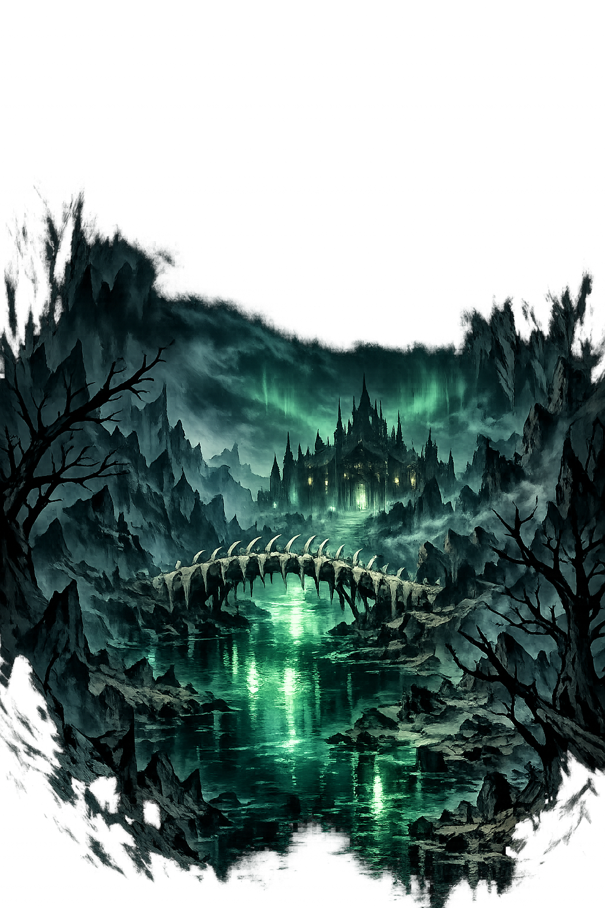

Why —.com is the correct form
—
The name in its original Old Norse form — a compound of Hel (the goddess of death) and heimr (home, world, realm). In the Norse cosmos, there are nine worlds, and — is the one that receives those who die of sickness, old age, or anything other than combat. It is not a place of punishment — that is a Christian overlay. It is simply where the dead go. The realm is described as having high walls, gates that cannot be opened by the living, and halls where the dead feast on the same food they ate in life. Hel herself is half living flesh, half corpse — beautiful on one side, rotting on the other.
HELHEIM
Reduced to seven letters. A Minecraft mod. A death metal band. The name of a thousand games and products that use the Norse aesthetic without understanding the Norse meaning. The compound is flattened. The grammar is gone. What remains is a brand, a cliché, a void where a realm of the dead once stood. In Old Norse, heimr is a complete word — it means world, home, the place where you belong. Reducing it to HEIM is like reducing England to GLAND.
—
The full Old Norse form, with the -r ending preserved — the nominative singular masculine marker that English silently drops. In Old Norse, every noun has a case ending, and heimr carries its -r like a standard-bearer carries a flag. This is not decoration. It is the recovery of a grammatical language — a tongue where words changed shape depending on what they were doing in the sentence. The domain encodes to Punycode, but the browser displays the truth.
—.com → Helheimr.com
The final r is the Old Norse nominative marker. To the DNS, the domain is ASCII. To the Eddas, it is —.
Where helheimr stands in the PUNYCODEX elegant tier system
Under the elegant tier system, non-Greek canonical forms are Tier 1 by definition. Old Norse has no macron+acute dual-mark system. Its canonical form — the form with þ, ð, o, and acute — is its highest orthography.
helheimr is Tier 1 because it preserves the authentic characters of the Norse pantheon. These are not decorative. They are the scholarly standard — the same forms you will find in Cleasby-Vigfusson, in Simek, in the Prose Edda. To strip them would be to Latinize. The PUNYCODEX does not Latinize.
How the realm of the dead was truly spoken
What awaits beyond the gates
— is not Hell. The Christian concept of eternal torment has nothing to do with the Norse underworld. — is simply where most people go when they die. Only those who fall in battle are taken to Valholl or Fólkvangr. Everyone else — the old, the sick, the drowned, the murdered, those who died in bed surrounded by their children — goes to Hel. The realm is described in the sources as having high walls, a hall called Éljúðnir ("Sprayed with Snow"), a threshold called Fallanda-forað ("Falling to Peril"), and a bed called Kor ("Sick Bed"). Hel herself is both beautiful and terrible, half the color of living flesh, half the color of a corpse.
— is surrounded by walls that cannot be breached by the living. In Baldrs draumar, Óðinn rides to the gates and must use magic to pass. The walls keep the dead in and the living out — not as punishment, but as boundary. The dead have their place. The living have theirs.
Loki's daughter, born of the giantess Angrboða. Half her face is beautiful, half is rotting flesh. She rules — with absolute authority. She is not evil — she is necessary. Someone must receive the dead. Someone must give them a place.
The journey to — is always down and north. The Eddas describe the road as passing through dark valleys, over bridges that vibrate beneath the weight of the dead, and through gates guarded by the hound Garmr. The direction is fixed — north is the realm of cold, of darkness, of winter.
In —, the dead continue their lives in diminished form. They eat. They drink. They sleep in their sick-beds. It is not paradise — it is continuation. The Norse afterlife for most people was not about reward or punishment. It was about going on, in a quieter world, beneath the roots of the living tree.
Stories of Baldr, Óðinn, and the road that goes only one way
Baldr, son of Óðinn and Frigg, began to dream of his own death. His mother Frigg traveled the world and extracted oaths from every object — stone, metal, wood, fire, water — that they would not harm her son. But she overlooked the mistletoe, thinking it too young and harmless to swear. Loki discovered this. He fashioned a dart from mistletoe and gave it to Baldr's blind brother Höðr. Höðr threw it. Baldr died. The gods were devastated. Frigg begged for a volunteer to ride to — and bargain for Baldr's return. Hermóðr, Óðinn's son, took Óðinn's horse Sleipnir and rode nine days north, through dark valleys, until he came to the Gjöll bridge. The maiden Móðguðr who guards it told him that five battalions of dead men had ridden across that morning, but the bridge did not shake as it did beneath him alone. Hermóðr reached Hel's hall. He found Baldr sitting in the seat of honor. He begged Hel to release him. Hel made a condition: if every living thing in the nine worlds wept for Baldr, she would let him go. The gods sent messengers everywhere. All wept — except one giantess, Þökk, who said: "Let Hel hold what she has." Þökk was Loki in disguise. Baldr stayed in —. And the gods knew that Ragnarok had begun.
In Baldrs draumar, Óðinn himself rides to — to find out why his son dreams of death. He takes the road that goes only downward, through mist and silence, until he reaches the eastern gate of the underworld. There he finds the grave of a völva — a seeress — and chants spells over her body until she rises and speaks. She tells him what he already suspects: Baldr will die, and the world will end. Óðinn learns the future and cannot change it. That is the nature of — — once you go there, you do not come back unchanged. The dead know things the living refuse to see.
Garmr is the hound who guards the entrance to —. He is described as blood-stained, howling, chained at the gates of the underworld. In Völuspá, it is prophesied that at Ragnarok, Garmr will break his chains and fight Týr, the god of war, and they will kill each other. Garmr is the Norse equivalent of Cerberus — but where Cerberus has three heads, Garmr has one, and his howl is so loud that it echoes through all nine worlds. When Garmr howls, the dead know that the end is coming.
The Norse cosmos is not a pantheon of gods alone — it is a map of worlds. Ásgarðr has the gods. Miðgarðr has the humans. Jotunheimr has the giants. Álfheimr has the elves. And — has the dead. To understand the Norse universe, you must understand all nine realms — not just the ones that make good movies.
This is not a directory. This is a resurrection.
Enter the Lexicon